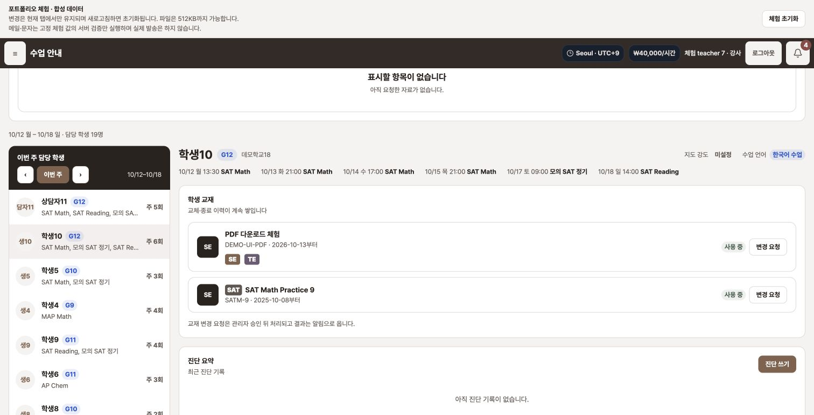

기본 정보
프로젝트와 연락처를 확인할 수 있는 공개 정보입니다
- 이름
- 김민수
- 분야
- AI · 백엔드 개발
- GitHub
- Kiim-Miin-Su ↗
사용 기술
프로젝트에서 사용한 기술 중심
- 백엔드
- NestJS · TypeScript · TypeORM · Prisma · Java · Spring Boot
- 프론트엔드
- Next.js · React
- 데이터·배포
- PostgreSQL · Docker · Vercel · AWS Serverless
- 연구
- Python · PyTorch · scikit-learn
경력·학력
재직과 수학 이력을 구분해 정리했습니다
경력
- TN Academy (주식회사 TN그룹)프리랜서 개발자 · ERP 및 업무 자동화 기능 설계·구현·배포
학력
- 조선대학교 인공지능공학과수학 · VA-AFS 연구, Safe Sight 프로젝트
- 한국방송통신대학교 컴퓨터과학과수학
- 서울예술대학교 싱어송라이터 전공전문학사 졸업
자격·수료
- 정보처리산업기사
- LG Aimers 9기 수료
현재 학습
경력 및 프로젝트 경험과 구분한 학습 주제
- Spring Boot · JPA트랜잭션과 API 설계
- AI 활용문서 검색, RAG 품질 평가, Spring AI
- 전달과 운영테스트, 관측, Docker, CI/CD